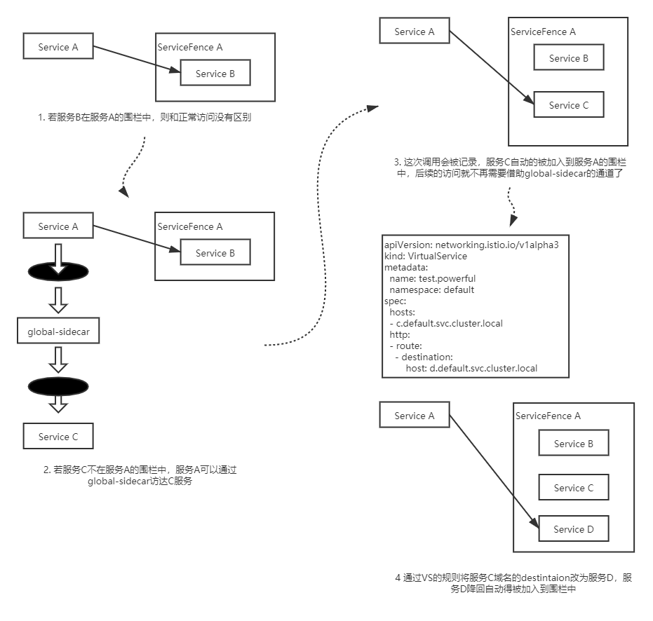

在实现配置懒加载之前，我们团队遇到的问题是，新上的应用长时间处于Not Ready状态，观察Envoy日志发现由于配置量太大，导致其一直卡在初始化配置阶段。于是，我们询问了业务方，该服务所需依赖的服务有哪些，并为其配上了Sidecar Scope，Not Ready的时间立马从分钟级降到了秒级。但是每次业务发布时，都为其手动运维不现实，而且服务的依赖关系很有可能在运行阶段发生改变。如何自动的这个依赖关系成为这个问题的关键。
我们首先想到的是从服务拓扑图中获取该信息，但是只有访问成功了才会生成拓扑图，换而言之，配置懒加载依赖拓扑图，而拓扑图的生成又依赖调用方能获得被调用方的信息。这无疑是一个鸡生蛋还是蛋生鸡的问题。有什么办法可以使得调用方在不知道被调用方信息时依然能够访问成功，成为了打破鸡蛋悖论的关键。
我们想到的办法是引入另一个sidecar，虽然称作sidecar，但它更像是一个sidebus，因为它是一个全局共享的sidecar，拥有全量的配置和服务发现信息。为了使调用方在不知道被调用方信息时也能访问被调用方，还需要将原有的兜底路由替换为指向global-sidecar的。
按照配置按需加载的思路，一开始会为服务配置一个不包含任何服务信息的ServiceFence。当服务调用Fence之外的服务时，首先会命中兜底规则，被导流到global-sidecar，global-sidecar会根据相应的规则访问被调用方，同时这一调用关系也被global-sidecar上报给report-server。
ServiceFence可以看作是针对某一服务的Sidecar资源，区别是ServiceFence不仅会根据依赖关系生成Sidecar资源，同时会根据VirtualService规则判断服务的真实后端，并自动扩大Fence的范围。例如，c.default.svc.cluster.local在fence中，此时有一条路由规则的host为c.default.svc.cluster.local，其destinatoin为d.default.svc.cluster.local，那么d服务也会被自动扩充到Fence中。

启用和停用配置懒加载功能也十分简单，使用者无需关心底层的ServiceFence以及Sidecar资源，只需在Service上打上istio.dependency.servicefence/status: "true"的标签，表面该服务需要开启配置懒加载的标签即可。